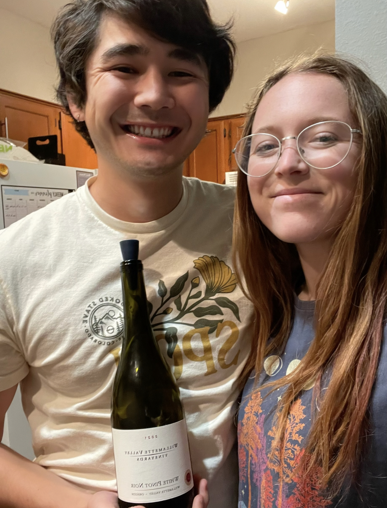

White Pinot Noir
What is it?
White Pinot Noir is a wine made from Pinot Noir grapes (which are red) in a white style. The skins of the grapes are removed prior to fermentation, so the wine does not turn as red as in the usual Pinot Noir. There is also lower tannin in White Pinot Noir than in Pinot Noir due to the absence of skins. Additionally, this wine is relatively hard to find as not a ton of wine producers make White Pinot Noir.
Primary flavors of White Pinot Noir are baked apple, lemon zest, orange zest, pear, honey, and ginger. Suggested pairings include cream-based soups, foods with a creamy dressing or sauce, and dishes with mushrooms. We had this wine with a pasta primavera.
This wine was a gift to us from a loyal subscriber and friend of WOTW (thanks, Abbey!). If you have any suggestions of wines we should try, please let us know via the comment box at the end of the post!
Molly's Rating and Tasting Notes
8.0. This was a fun little white wine because I had no idea what to expect. It ended up being sweeter than than I was expecting, and there was a nice mouthfeel - sort of richer than an average white wine. To me, this wine is pretty lime-forward with some smooth notes at the end. I'd definitely drink this again.
Ryan's Rating and Tasting Notes
8.3. On the nose I get clear gummy bear, honeydew, and apple. On the tongue, I don't get a whole lot. There's maybe a little bit of a green apple taste, but there's a little more spice and depth than just green apple. From the first instance of the libation leaving the glass to the last remnants of the aftertaste, there is a slight, indescript citrus note underpinning the entire experience. This wine is a little bit sweet, mixed with a touch of acidity, and finished with a dash of bitterness. As for the aftertaste, it lingers but is very muted, which I don't mind at all. Overall a decent, crisp, refreshing wine.
References
[1] Madeline Puckette and Justin Hammack. Wine Folly: The Master Guide. Avery - A Penguin Imprint, New York, NY, 2018.
[2] "The Guide To White Pinot Noir." Wine Folly. https://winefolly.com/deep-dive/white-pinot-noir/. Accessed: September 2023.
Wines we haven't finished
- None this week!